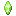
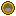

Quick tutorial#
- Collect Timeclock Gears
 Timeclock Gear: kill Time Beasts, mine Chrono Ore, loot villages and bastions.
Timeclock Gear: kill Time Beasts, mine Chrono Ore, loot villages and bastions. - Get some Upgrade Chips and Upgrade Crystals from
 Alien Evolution.
Alien Evolution. - Craft a Timeclock Key, both Timeclock Chips and a Timeclock Core.
- Craft
 Chronosapien DNA and right-click it. The Chronosapien is now in your Omnitrix.
Chronosapien DNA and right-click it. The Chronosapien is now in your Omnitrix.
All together that's 15 Timeclock Gears (6 for the Key, 2 for each Chip, 4 for the Core, 1 more for the DNA), 6 Upgrade Chips and 5 Upgrade Crystals.
Where Timeclock Gears come from#
Time Beast
- Gears
- 2 to 4
- Chance
- Always
Maltruant
- Gears
- 6 to 12
- Chance
- Always
Chrono Ore (and Deepslate Chrono Ore)
- Gears
- 1
- Chance
- Always
Crafting a Timeclock Key back down
- Gears
- 6
- Chance
- Always
Suspicious sand and gravel (archaeology)
- Gears
- 1
- Chance
- 5%
Raid Evokers
- Gears
- 1
- Chance
- 5%, +1% per Looting level
Bastion chests (Nether)
- Gears
- 1
- Chance
- 3%
Village chests
- Gears
- 1
- Chance
- 1%
Piglin bartering
- Gears
- 1
- Chance
- 1%
Hero of the Village gifts
- Gears
- 1
- Chance
- 1%
Time Beasts guard Maltruant's Area, a small ruin in the biomes where Alien Evolution's Galvan
capsules land. They're the fastest way to farm gears, and also drop the Key (5%) and, very rarely, a ready-made DNA sample (0.1%).
Recipes#
The Upgrade Chip, Upgrade Crystal and Galvan Metal come from Alien Evolution. Check  JEI for how to get them in your version.
JEI for how to get them in your version.
Timeclock Key
Timeclock Gears
Timeclock Chip I
Timeclock Chip II
Timeclock Core


Chronosapien DNA
A Timeclock Chip on its own in the grid turns into the other one, so a spare of either works.
Injecting the DNA#
Hold the DNA and right-click. "Chronosapien DNA was injected into the Omnitrix." means it worked and the DNA is used up. It won't be used if:
- your Omnitrix already has Chronosapien DNA,
- your Omnitrix playlists are full (make room first), or
- Alien Evolution didn't load the Chronosapien alien file (a broken install).
Once you have him, see Clockwork and his skill tree.